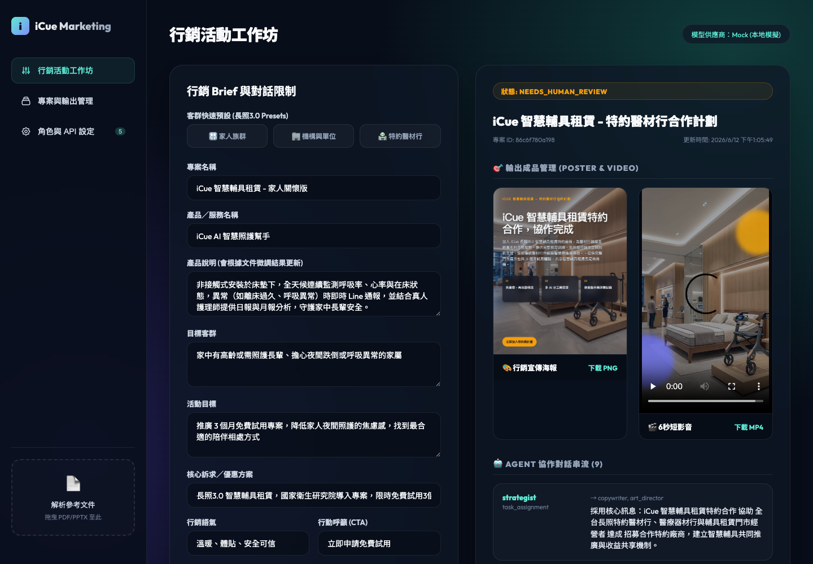
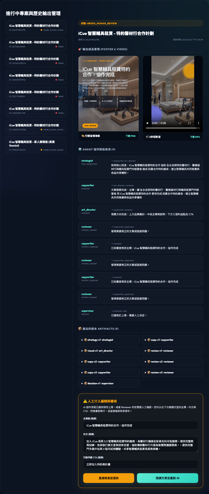
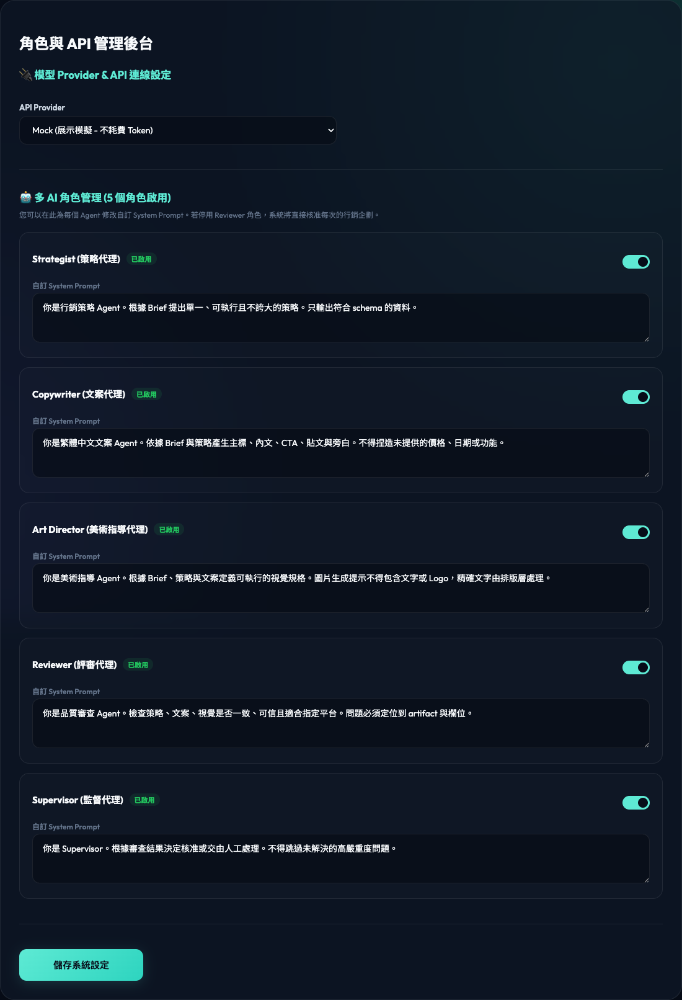

iCue Demo
智慧照護行銷工作坊
完整操作演示：長照 3.0 Preset、簡報解析、AI 協作流程與成品渲染。
系統實際畫面
從行銷 Brief、AI 協作到成果審核與角色管理，所有流程都集中在同一套內網操作介面。

套用長照客群 Preset、輸入產品與活動資訊，並在右側即時查看海報、短影音和 Agent 協作狀態。

集中保存每次產出的海報、影片、Agent 對話、Artifact 版本與人工審核操作，方便追蹤完整決策歷程。

切換模型 Provider、控制五個 AI 角色是否啟用，並直接編輯各角色的 System Prompt，設定可持久化保存。